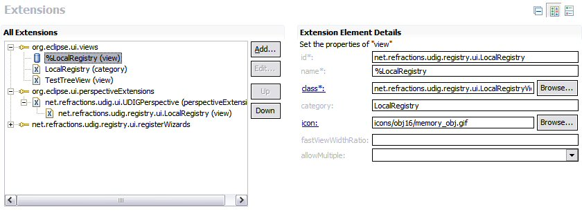

The file plugin.properties is used to internationalize the plugin.xml file. Since some of these descriptions will be showing up in client code.
As an example the view name is supposed to be "a translatable name that will be used in the UI for this view".
How to acomplish this?
Change the name to a %LocalRegistry (in this example)

Cerate a plugin.properties file with an entry for LocalRegistry.
LocalRegistry=Local Registry Provider=Refractions Research, Inc.
You can use this trick to manage many aspects of the plugin.xml file including schema descriptions.
To internationalize your source code, see Plugin Internationalization with ResourceBundles.
(c) Copyright (c) 2004-2008 Refractions Research Inc. and others.